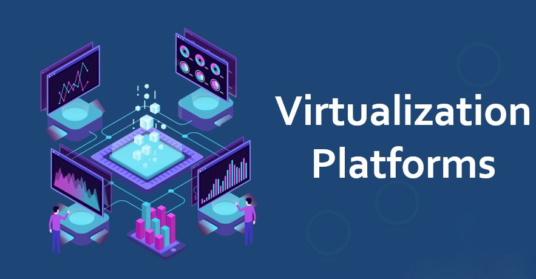
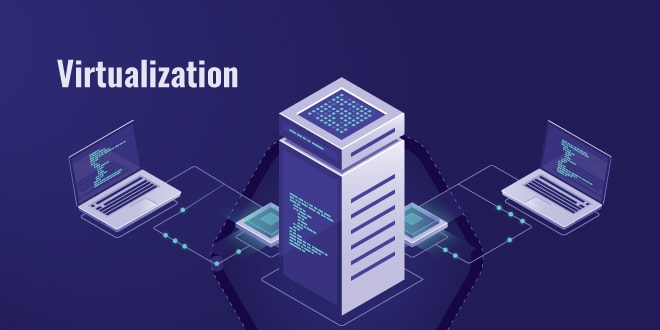
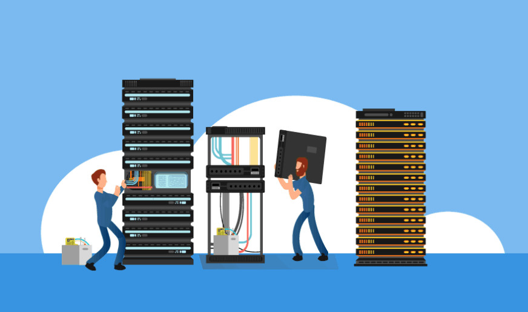

Virtualization Technologies
What is Virtualization?
Virtualization is the process of creating a software-based, or virtual, representation of something, such as virtual applications, servers, storage and networks. It is the single most effective way to reduce IT expenses while boosting efficiency and agility for all size businesses.
Benefits of Virtualization
Virtualization can increase IT agility, flexibility and scalability while creating
significant cost savings. Greater
workload mobility, increased performance and availability of resources, automated
operations – they’re all benefits of
virtualization that make IT simpler to manage and less costly to own and operate.
Additional benefits include:
• Reduced capital and operating costs.
• Minimized or eliminated downtime.
• Increased IT productivity, efficiency, agility and responsiveness.
• Faster provisioning of applications and resources.
• Greater business continuity and disaster recovery.
• Simplified data center management.
• Availability of a true Software-Defined Data Center..

How Virtualization Works
Virtualization 101
Due to the limitations of x86 servers, many IT organizations must deploy multiple servers, each operating at a
fraction
of their capacity, to keep pace with today’s high storage and processing demands. The result: huge inefficiencies
and
excessive operating costs.
Enter virtualization. Virtualization relies on software to simulate hardware functionality and create a virtual
computer
system. This enables IT organizations to run more than one virtual system – and multiple operating systems and
applications – on a single server. The resulting benefits include economies of scale and greater efficiency.
Virtual Machines Explained
A virtual computer system is known as a “virtual machine” (VM) a tightly isolated software container with an
operating
system and application inside. Each self-contained VM is completely independent. Putting multiple VMs on a single
computer enables several operating systems and applications to run on just one physical server, or “host.”
A thin layer of software called a “hypervisor” decouples the virtual machines from the host and dynamically
allocates
computing resources to each virtual machine as needed.

Key Properties of Virtual Machines
VMs have the following characteristics, which offer several benefits.
Partitioning
• Run multiple operating systems on one physical machine.
• Divide system resources between virtual machines.
Isolation
• Provide fault and security isolation at the hardware level.
• Preserve performance with advanced resource controls.
Encapsulation
• Save the entire state of a virtual machine to files.
• Move and copy virtual machines as easily as moving and copying files.
Hardware Independence
• Provision or migrate any virtual machine to any physical server.
Types of Virtualization
Server Virtualization
Server virtualization enables multiple operating systems to run on a single physical server as highly efficient
virtual
machines.
Key benefits include:
• Greater IT efficiencies
• Reduced operating costs
• Faster workload deployment
• Increased application performance
• Higher server availability
• Eliminated server sprawl and complexity
Network Virtualization
By completely reproducing a physical network, network virtualization allows applications to run on a virtual network as if they were running on a physical network — but with greater operational benefits and all the hardware independencies of virtualization. (Network virtualization presents logical networking devices and services — logical ports, switches, routers, firewalls, load balancers, VPNs and more — to connected workloads.)
Desktop Virtualization
Deploying desktops as a managed service enables IT organizations to respond faster to changing workplace needs and emerging opportunities. Virtualized desktops and applications can also be quickly and easily delivered to branch offices, outsourced and offshore employees, and mobile workers using iPad and Android tablets
Virtualization vs. Cloud Computing
Although equally buzz-worthy technologies, virtualization and cloud computing are
not interchangeable.
Virtualization is
software that makes computing environments independent of physical infrastructure,
while cloud computing is a
service
that delivers shared computing resources (software and/or data) on demand via the
Internet.
As complementary solutions,
organizations can begin by virtualizing their servers and then moving to cloud
computing for even greater agility
and
self-service.